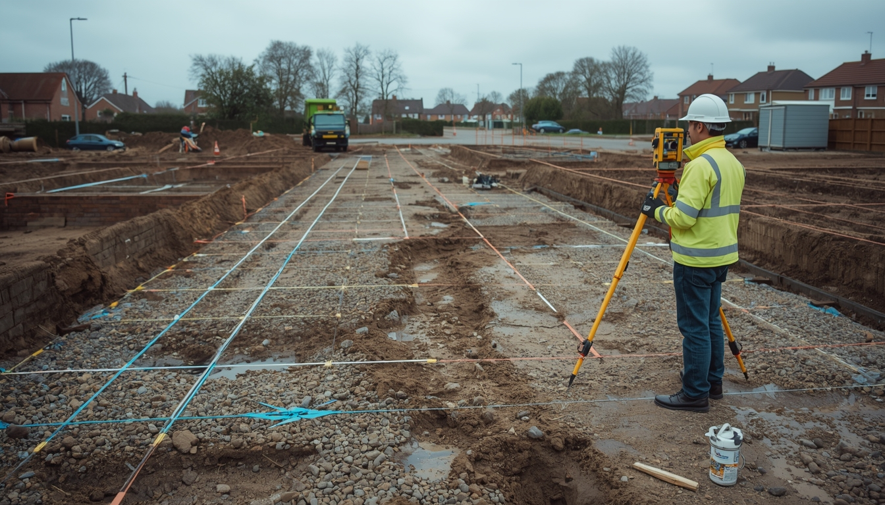

Precise positioning and layout of structures on site, translating design coordinates into accurate physical points to guide construction — across the North West.
Get a QuoteUsing robotic total stations and GPS, we translate your design coordinates into accurate physical positions on site to guide your contractors.
Accurate setting out prevents costly mistakes during construction — ensuring buildings, roads and services are positioned exactly as designed.
We coordinate directly with your architects, engineers and contractors to ensure the setting out aligns with your design intent throughout.
Setting out is the critical first step on any construction project — transferring the positions, levels and dimensions from your design drawings onto the physical ground so your contractors can build with confidence.
We work from your architectural or engineering drawings and CAD files, establishing control points, grid lines, building outlines and finished floor levels across the site.